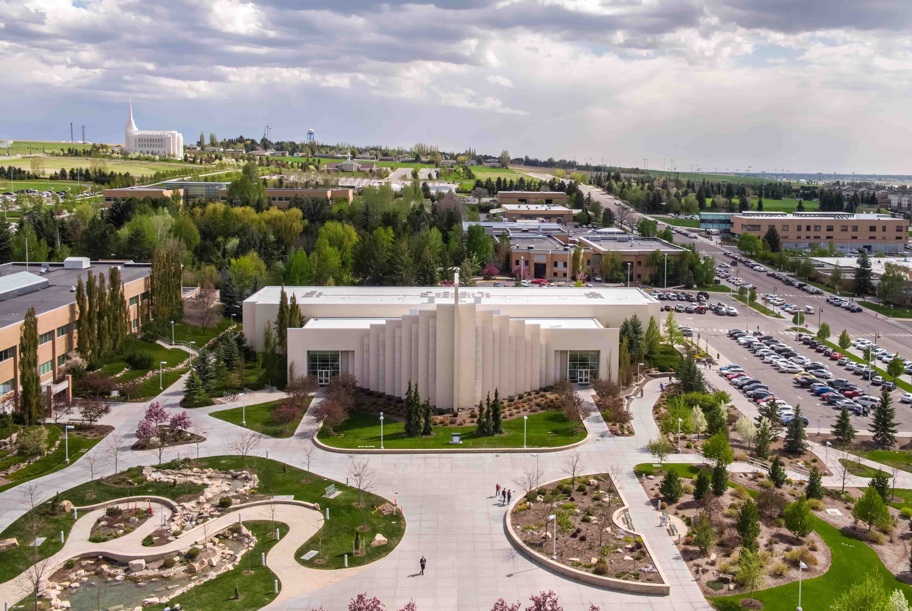

Founded by pioneers from The Church of Jesus Christ of Latter-Day Saints coming from Utah, Rexburg, was the second largest city in Idaho at the time of its entry to the union.
Education has always been central to the city of Rexburg, with the Bannock Stake Academy being founded within the first year of the city’s existence and grew to eventually become Brigham Young university – Idaho in 2001 drawing approximately 15,000 students every year to the area.

Including several local shops that draw the interest and business of both locals and students, Rexburg
Brigham Young University – Idaho, originally founded as the Bannock Stake Academy in 1888, draws many students from across the globe, with degree options covering both two and four year degree paths.
Numerous hikes and scenic walkways, including 'R' Mountain, and Mesa Falls
Within 100 miles of several National Parks including Yellowstone National Park.